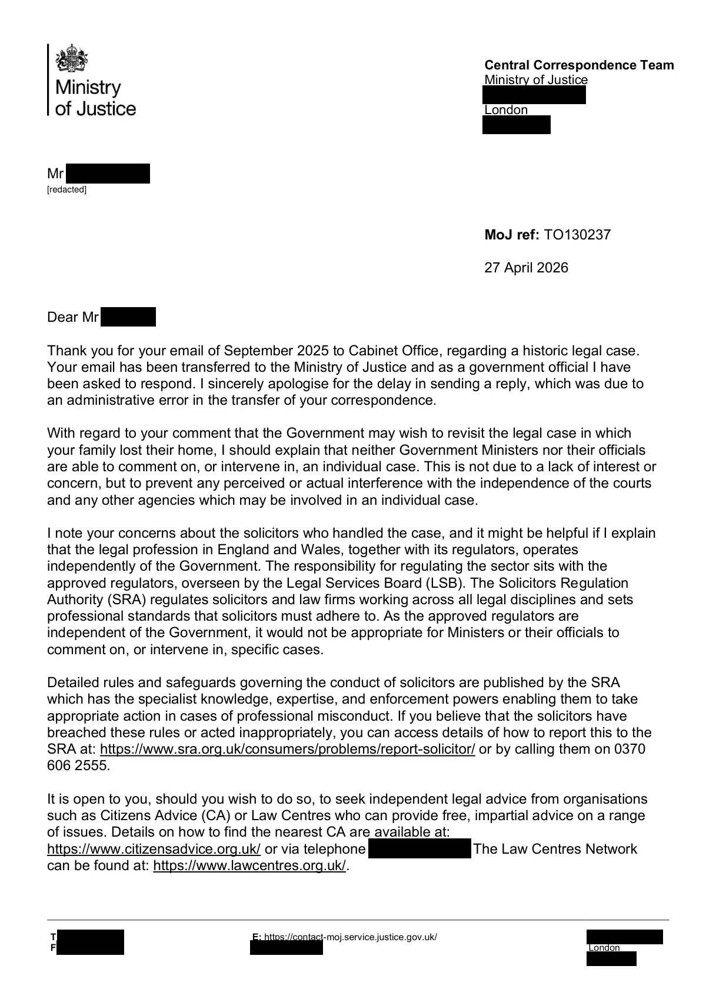

GHF-E106-R36-A1 reply attachment
Central Correspondence Team reply TO130237

Transcript
T [phone redacted] F [phone redacted] E: https://contact-moj.service.justice.gov.uk/ [address redacted] London [address redacted] Central Correspondence Team Ministry of Justice [address redacted] London [address redacted] Requester MoJ ref: TO130237 27 April 2026 Dear Requester, Thank you for your email of September 2025 to Cabinet Office, regarding a historic legal case. Your email has been transferred to the Ministry of Justice and as a government official I have been asked to respond. I sincerely apologise for the delay in sending a reply, which was due to an administrative error in the transfer of your correspondence. With regard to your comment that the Government may wish to revisit the legal case in which your family lost their home, I should explain that neither Government Ministers nor their officials are able to comment on, or intervene in, an individual case. This is not due to a lack of interest or concern, but to prevent any perceived or actual interference with the independence of the courts and any other agencies which may be involved in an individual case.
Read more
I note your concerns about the solicitors who handled the case, and it might be helpful if I explain that the legal profession in England and Wales, together with its regulators, operates independently of the Government. The responsibility for regulating the sector sits with the approved regulators, overseen by the Legal Services Board (LSB). The Solicitors Regulation Authority (SRA) regulates solicitors and law firms working across all legal disciplines and sets professional standards that solicitors must adhere to. As the approved regulators are independent of the Government, it would not be appropriate for Ministers or their officials to comment on, or intervene in, specific cases. Detailed rules and safeguards governing the conduct of solicitors are published by the SRA which has the specialist knowledge, expertise, and enforcement powers enabling them to take appropriate action in cases of professional misconduct. If you believe that the solicitors have breached these rules or acted inappropriately, you can access details of how to report this to the SRA at: https://www.sra.org.uk/consumers/problems/report-solicitor/ or by calling them on [phone redacted]. It is open to you, should you wish to do so, to seek independent legal advice from organisations such as Citizens Advice (CA) or Law Centres who can provide free, impartial advice on a range of issues. Details on how to find the nearest CA are available at: https://www.citizensadvice.org.uk/ or via telephone [phone redacted]. The Law Centres Network can be found at: https://www.lawcentres.org.uk/. [redacted] 2 I realise that this reply will be a disappointment to you, however there is nothing further that I can add. Yours sincerely, Ms S Hollis Ministry of Justice
Artifact description
| Catalogue ID | GHF-E106-R36-A1 |
|---|---|
| What it is | PDF document from Ministry of Justice. Attached to an email received on 27 April 2026. 2 pages. |
| From | Ministry of Justice |
| Email received | 27 April 2026 |
| Their reference | none given |
| Pages | 2 |
| File | TO130237 Requester.pdf (101 KB) |
| State | Read |
Our integration
Concern to test: whether this reply answers the question as asked, or a narrower one. Not checked against the original request wording here.
Related: The covering email · Timeline · Disclosure Dartboard